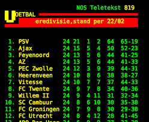

Voetbal
uitslagen

Journalist Mike Verweij vroeg Overmars woensdag om een reactie op het gerucht dat Domènech de wereld in hielp. "Verder geen nieuws en geen reacties!", luidt het antwoord van de directeur van Ajax. De Telegraaf concludeert op basis van het woordje 'verder' en het ontbreken van een ontkenning dat het verhaal uit Spanje weleens zou kunnen kloppen. Overmars wil echter geen expliciete bevestiging geven.
Overmars verlengde zijn contract vorig jaar maart tot medio 2024, maar liet al eerder blijken dat mogelijk niet uit te gaan dienen. "Bij mijn aanstelling dacht ik dat ik drie of vier jaar zou blijven", zei de directeur vorig jaar oktober. "Voor mij geldt wel, en voor Edwin van der Sar (algemeen directeur bij Ajax, red.) ook, denk ik, dat we dit niet tot ons zestigste zullen blijven doen."
De krant voegt toe dat Overmars al meerdere keren aanbiedingen van zijn voormalige clubs Arsenal en Barcelona afsloeg. "De voormalige buitenspeler was voor zijn gevoel nog niet klaar bij Ajax, wilde trainer Erik ten Hag rugdekking blijven geven én, minstens zo belangrijk, vond het buitenland pas een optie als allebei zijn zoons zelfstandig waren." Toch heeft de oud-international wel degelijk de ambitie heeft om bij een van de twee grootmachten aan de slag te gaan. Met de presidentsverkiezingen van Barcelona in het vooruitschiet volgt wellicht snel een nieuwe kans om in het Camp Nou aan de slag te gaan.